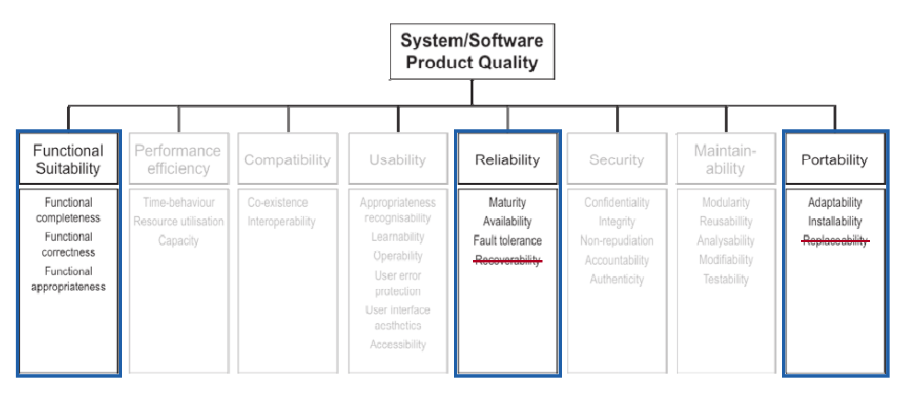

2.5 Modelo de Qualidade e Escopo
O objetivo desta página é representar o modelo de qualidade (ISO/IEC 25010) adotado, a priorização das características e o escopo e a profundidade da análise. As características selecionadas, com suas subcaracterísticas, aparecem na Figura 1:
- Adequação Funcional
- Confiabilidade
- Portabilidade
Figura 1: Modelo de qualidade do produto da ISO/IEC 25010:2011 com a seleção da equipe. Contornos azuis: características avaliadas. Em cinza: características não selecionadas. Subcaracterísticas riscadas: fora do escopo (D4).

Fonte: adaptado de ISO/IEC 25010:2011, Figura 4 (Product quality model).
Autor(es): João Vitor, 2026.
Metodologia
Adotamos o modelo de qualidade do produto da ISO/IEC 25010:2011 (D5). A cláusula 2 da norma permite adaptar o modelo, desde que as mudanças sejam justificadas e mapeadas ao modelo padrão. As adaptações são três, justificadas pelo contexto do produto e das partes interessadas:
- Mantemos três características e oito subcaracterísticas com os nomes originais, de modo que o mapeamento ao modelo padrão é direto. Recuperabilidade e substituibilidade ficam fora (D4).
- As demais características são excluídas pela priorização (seção 2.5.1).
- Cada subcaracterística é interpretada para o produto, porque os usuários primários precisam de dados corretos e atuais e a equipe mantenedora precisa de resultados observáveis de fora.
A edição de 2023 da norma, entre outras mudanças, renomeia Portabilidade para Flexibilidade e substitui Maturidade por Ausência de falhas (faultlessness) [3]. Mantivemos a edição de 2011 porque o rascunho da ISO/IEC 25023 fornecido na disciplina usa os nomes dessa edição.
2.5.1 Priorização das características
Das oito características do modelo, excluímos Usabilidade por exigência do trabalho e avaliamos as outras sete por uma matriz de impacto por risco.
- Impacto (1 a 5): consequências de uma falha para os usuários primários e para a equipe mantenedora.
- Risco (1 a 5): probabilidade de falha, estimada a partir das evidências de 2.3 Descrição do Produto, como a atualização manual dos dados.
- Viabilidade (1 a 5): facilidade de medir a característica de fora. É um filtro: características com viabilidade abaixo de 3 são excluídas.
Os valores abaixo são julgamentos da equipe, apoiados nessas evidências.
Tabela 1: Priorização das características de qualidade (ISO/IEC 25010)
| Característica | Impacto | Risco | Impacto x Risco | Viabilidade | Decisão e justificativa |
|---|---|---|---|---|---|
| Adequação Funcional | 5 | 4 | 20 | 5 | 1ª. Núcleo do produto; os dados vêm de scraping manual e a correção da geração de grades ainda não foi verificada |
| Confiabilidade | 4 | 4 | 16 | 4 | 2ª. Depende de login externo, de hospedagem e de atualização manual |
| Segurança | 4 | 3 | 12 | 2 | Excluída: exigiria análise do código ou testes de intrusão em produção, fora da avaliação externa e não autorizados |
| Portabilidade | 3 | 3 | 9 | 4 | 3ª. Estudantes acessam de dispositivos variados (premissa); a matriz de ambientes é viável |
| Manutenibilidade | 3 | 3 | 9 | 1 | Excluída: exige análise do código-fonte, fora da avaliação externa adotada |
| Eficiência de desempenho | 3 | 2 | 6 | 3 | Não selecionada. O limite de quatro turmas por disciplina restringe o crescimento das combinações |
| Compatibilidade | 2 | 2 | 4 | 3 | Não selecionada. As interações se limitam ao login Google e aos arquivos exportados |
| Usabilidade | - | - | - | - | Excluída pelo enunciado do trabalho |
Autor(es): João Vitor, 2026.
Ordem de prioridade: Adequação Funcional, Confiabilidade e Portabilidade, derivada das necessidades do estudante (impacto) e do conhecimento operacional da equipe mantenedora (risco).
Trade-offs registrados:
- Segurança teria pontuação maior que Portabilidade, mas ficou fora por inviabilidade externa; o risco de vulnerabilidades não detectadas é assumido e declarado.
- A disponibilidade exige dias de observação; por isso o monitoramento da Confiabilidade deve começar cedo, mesmo ela sendo a segunda prioridade.
- Limitamos a avaliação a três características pelo tamanho da equipe e pelos prazos; Eficiência de desempenho é a próxima da fila.
- A exclusão de Usabilidade, imposta pelo trabalho, deixa de fora o que provavelmente é mais visível aos usuários primários.
2.5.2 Escopo e profundidade
Abrangência (escopo)
O objeto avaliado é o Sua Grade UnB em produção, no estado de 17/10/2026, observado por sua interface web.
Tabela 2: Dentro do escopo
| Dentro do escopo | Motivo |
|---|---|
| Os oito fluxos da navegação mapeada, nos modos anônimo e com login Google | Cobrem toda a tarefa principal; o login é uma dependência externa crítica e o salvamento em conta só existe no modo logado |
| Dados de turmas do período corrente, comparados à página pública do SIGAA | Referência de verdade da corretude funcional |
| Matriz de navegadores, sistemas e telas | Necessária para medir a portabilidade |
Autor(es): João Vitor, 2026.
Tabela 3: Fora do escopo
| Fora do escopo | Motivo |
|---|---|
| Código-fonte e infraestrutura interna (hospedagem, banco, processo de scraping) | A avaliação é de caixa-preta; Manutenibilidade não foi selecionada |
| Segurança e desempenho | Segurança é inviável externamente; desempenho ficou fora das três prioridades |
| Usabilidade | Excluída pelo enunciado do trabalho |
| Recuperabilidade (D4) | Exigiria provocar falhas ou perda de dados em produção, o que não é adequado nem autorizado |
| Substituibilidade (D4) | O produto não se destina a substituir outro produto especificado e não tem função de migração |
Autor(es): João Vitor, 2026.
Profundidade
A profundidade é de caixa-preta, em nível de interface, sobre uma amostra de disciplinas.
Limites de validade dos resultados
- Valem apenas para o estado do produto em 17/10/2026, que evolui continuamente, e para os dados da última atualização manual.
- A amostra de disciplinas e de ambientes não permite generalizar para toda a oferta da UnB.
- A confiabilidade depende da janela de observação e da rede e dos dispositivos usados.
- Medidas externas indicam o que falha, mas não explicam as causas internas.
Relação com as fases seguintes
As subcaracterísticas fixadas aqui (D1 a D3) são a base da Fase 2, em que cada uma recebe objetivo, questões e métricas pelo método GQM.
2.5.3 Adequação Funcional
Definição segundo a norma: grau em que um produto ou sistema fornece funções que atendem às necessidades declaradas e implícitas quando usado sob condições especificadas.
As definições desta página são tradução livre da equipe a partir da ISO/IEC 25010:2011.
Tabela 4: Adequação funcional no Sua Grade UnB
| Subcaracterística | Descrição (ISO/IEC 25010) | Interpretação no Sua Grade UnB |
|---|---|---|
| Completude funcional | Grau em que o conjunto de funções cobre todas as tarefas e objetivos do usuário especificados | As funções declaradas no story map presente no github cobrem: Criar grade horaria, visualizar grade horaria, salvar grade localmente e na nuvem, apagar grade localmente e na nuvem, filtrar e adicionar materias, selecionar e adicionar turmas em uma lista, selecionar preferencia de turno, fazer registro via google. |
| Corretude funcional | Grau em que um produto ou sistema fornece os resultados corretos com o grau de precisão necessário | Turmas, horários, salas e docentes iguais aos do SIGAA; grades geradas sem conflitos nem disciplinas repetidas |
| Adequação funcional | Grau em que as funções facilitam a realização de tarefas e objetivos especificados | A grade é montada apenas com as etapas necessárias |
Autor(es): João Vitor, Pablo Rodrigues, 2026.
2.5.4 Confiabilidade
Definição segundo a norma: grau em que um sistema, produto ou componente executa funções especificadas sob condições especificadas por um período de tempo especificado.
Tabela 5: Confiabilidade no Sua Grade UnB
| Subcaracterística | Descrição (ISO/IEC 25010) | Interpretação no Sua Grade UnB |
|---|---|---|
| Maturidade | Grau em que um sistema, produto ou componente atende às necessidades de confiabilidade sob operação normal | Frequência de falhas durante o uso normal dos oito fluxos |
| Disponibilidade | Grau em que um sistema, produto ou componente está operacional e acessível quando requerido para uso | Produto acessível quando o estudante precisa montar a grade |
| Tolerância a falhas | Grau em que um sistema, produto ou componente opera como pretendido apesar da presença de falhas de hardware ou software | Comportamento diante de entradas inválidas e de falhas em dependências externas (login Google, fonte de dados) |
| Recuperabilidade (fora do escopo, D4) | Grau em que, no caso de uma interrupção ou falha, um produto ou sistema consegue recuperar os dados diretamente afetados e restabelecer o estado desejado do sistema | Exigiria provocar falhas ou perda de dados em produção |
Autor(es): João Vitor, 2026.
2.5.5 Portabilidade
Definição segundo a norma: grau de eficácia e eficiência com que um sistema, produto ou componente pode ser transferido de um ambiente de hardware, software ou outro ambiente operacional ou de uso para outro.
Tabela 6: Portabilidade no Sua Grade UnB
| Subcaracterística | Descrição (ISO/IEC 25010) | Interpretação no Sua Grade UnB |
|---|---|---|
| Adaptabilidade | Grau em que um produto ou sistema pode ser adaptado de forma eficaz e eficiente para diferentes ou evoluindo hardware, software ou outros ambientes operacionais ou de uso | Funções completas em diferentes navegadores, sistemas operacionais e tamanhos de tela |
| Instalabilidade | Grau de eficácia e eficiência com que um produto ou sistema pode ser instalado e/ou desinstalado com sucesso em um ambiente especificado | Formas de acesso por ambiente; por ser aplicação web, a instalação se resume ao acesso por endereço; o código não tem manifesto de aplicativo web, então a instalação como aplicativo não é oferecida |
| Substituibilidade (fora do escopo, D4) | Grau em que um produto pode substituir outro produto de software especificado para o mesmo propósito no mesmo ambiente | O produto não se destina a substituir outro e não tem função de migração |
Autor(es): João Vitor, Pablo Rodrigues, 2026.
Bibliografia
ISO/IEC 25010:2011. Systems and software engineering: SQuaRE: System and software quality models.
ISO/IEC WD 25023. Systems and software engineering: Systems and software Quality Requirements and Evaluation (SQuaRE): Measurement of system and software product quality. Working Draft, 31 ago. 2011.
ARC42 QUALITY MODEL. Update on ISO 25010, version 2023. Disponível em: https://quality.arc42.org/articles/iso-25010-update-2023. Acesso em: 17 out. 2026.
Histórico de Versão
| Versão | Descrição | Autor | Data | Revisor | Data de revisão |
|---|---|---|---|---|---|
| 1.0 | Versão Inicial | João Vitor | 18/10/2026 | Pablo Rodrigues | 21/10/2026 |
| 1.1 | Mudanças de completude funcional | Pablo Rodrigues | 21/10/2026 |